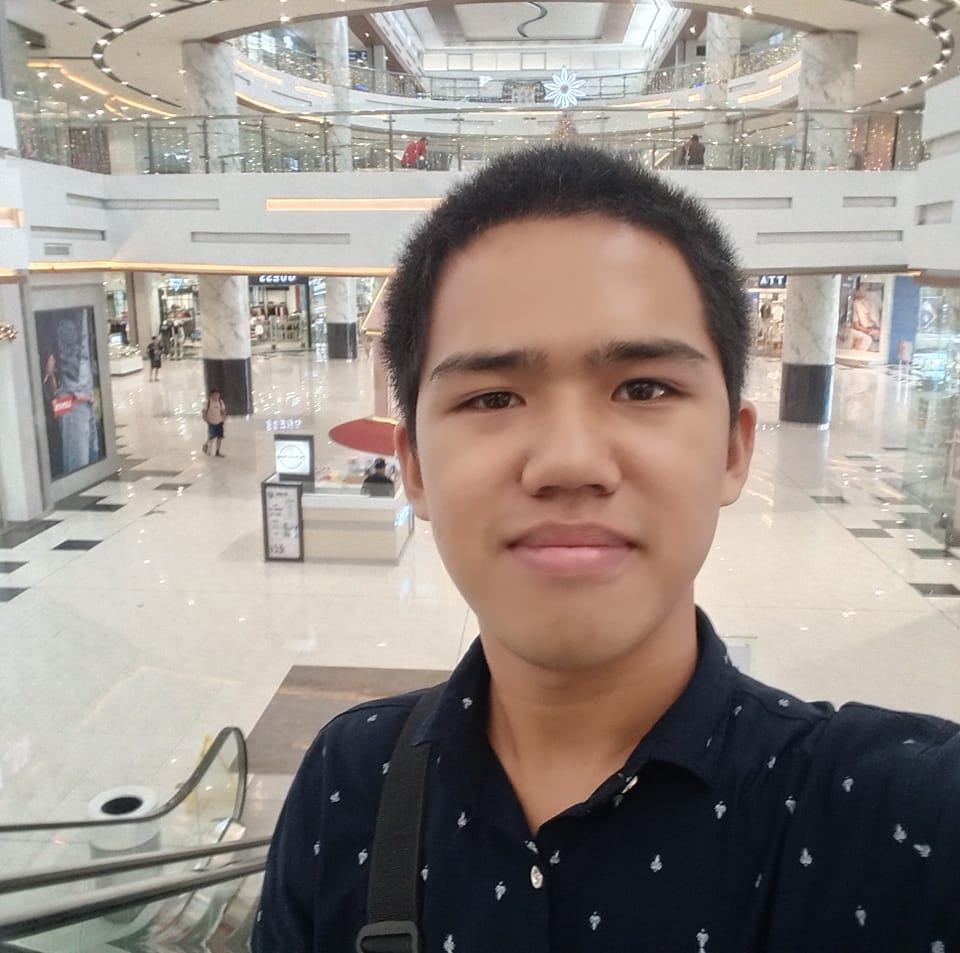
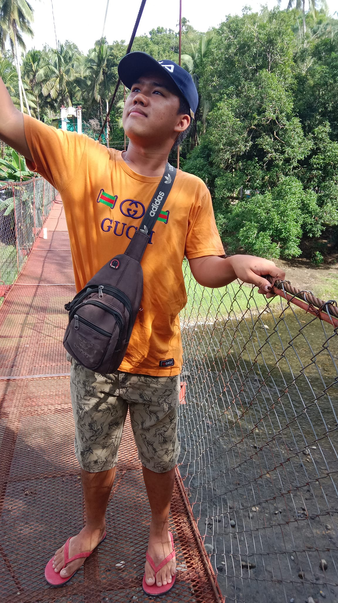

About_Myself
My name is Argie Pefanio Balana, twenty(20) years old.i am born at March 6, 2004 at Quezon city in luzon Philippines. And i've been living at District 3, Punta, Nasipit, Agusan del Norte for three(3) years and two(2) months.
I live at Talong Street, Tumana Marikina City for almost all my life(i live there for seventeen years). November 2021 we decided to go to my mother's friend's house and live there permanently(that's why i live here!).
For your Information, I am still a student. I'm currently studying at Saint Michael College of Caraga. I am a proud member of College of Computing and Information Sciences as a student of Bachelor of Science in Information technology


Information Science's logo